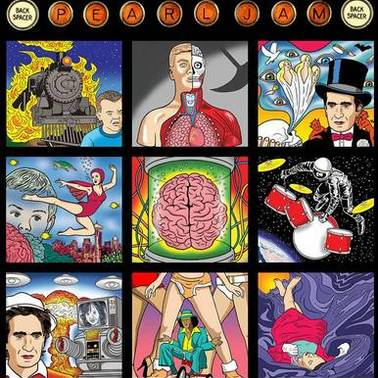

Bem Vindo, ( Login )

BACKSPACER
Banda: Pearl Jam
Ano de lançamento: 20/09/2009
Gênero: Grunge
Descrição: Backspacer é o nono álbum de estúdio da banda de rock americana Pearl Jam, lançado em 20 de setembro de 2009. Os membros da banda começaram a escrever faixas instrumentais e demo em 2007, e se reuniram no ano seguinte para trabalhar em um álbum. Foi gravado de fevereiro a abril de 2009 com o produtor Brendan O'Brien, que trabalhou em todos os álbuns do Pearl Jam, exceto em seu álbum de estreia Ten de 1991 e no disco autointitulado de 2006 — embora este tenha sido seu primeiro crédito de produção desde Yield de 1998. O material foi gravado no Henson Recording Studios em Los Angeles, Califórnia, e na Southern Tracks Recording de O'Brien em Atlanta, Geórgia. O álbum apresenta letras com um visual mais otimista do que os predecessores politicamente infundidos Riot Act e Pearl Jam, algo que o vocalista Eddie Vedder atribuiu à eleição de Barack Obama. Este também é o primeiro álbum desde No Code de 1996 para o qual todas as letras do álbum foram escritas exclusivamente por Vedder. Com 36 minutos e 38 segundos, Backspacer tem o menor tempo de execução de qualquer álbum de estúdio do Pearl Jam.
A banda lançou o álbum por meio de seu próprio selo Monkeywrench Records com distribuição mundial pela Universal Music Group por meio de um acordo de licenciamento com a Island Records. Cópias físicas do disco foram vendidas pela Target na América do Norte, e a promoção incluiu um acordo com a Verizon, uma turnê mundial e singles de sucesso moderado "The Fixer" e "Got Some"/"Just Breathe". As críticas para Backspacer foram amplamente positivas, elogiando o som e a composição, e o álbum se tornou o primeiro top das paradas do Pearl Jam na Billboard 200 dos EUA desde No Code, enquanto também liderou as paradas no Canadá, Austrália e Nova Zelândia.
Faixas: 1. Gonna See My Friend (2:48) 2. Got Some (3:02) 3. The Fixer (2:57) 4. Johnny Guitar (2:50) 5. Just Breathe (3:35) 6. Amongst the Waves (3:58) 7. Unthought Known (4:08) 8. Supersonic (2:40) 9. Speed of Sound (3:34) 10. Force of Nature (4:04) 11. The End (2:57)